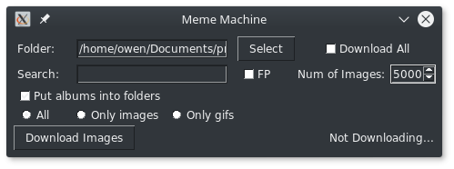
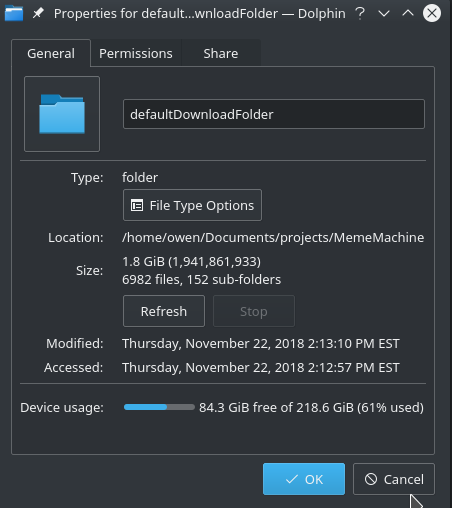

Memes, the peak of our great civilization. But it's too hard to obtain these memes in bulk. I've come to solve this problem that plagues us all. This spectacular program was make in Python using the tkinter lib for the user interface. This program is specially designed to get the maximum number of images for Imgur and actually uses a custom web scraper to bypass the restrictive 12500 request a day limit for their api. I mean how would I be able to get the memes I need with that kind of crazy limit.
Other than that there's nothing too special about this project. Just images in bulk, nothing to crazy. I used it for some neural net processing stuff at some point which was pretty cool. But other than that it's your run of the mill shitty throwaway program.
Here's a quick screenshot of the damage after running this bad boy for ~30min. Not too bad 7000 memes should last me a solid afternoon
